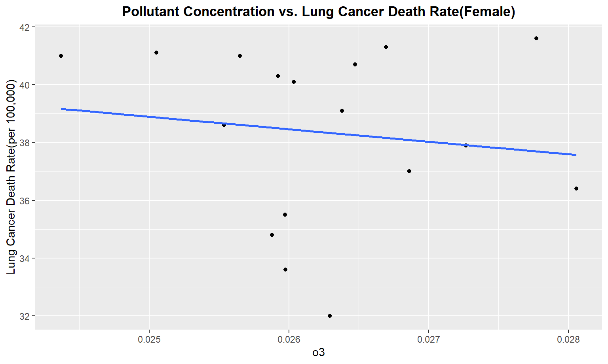
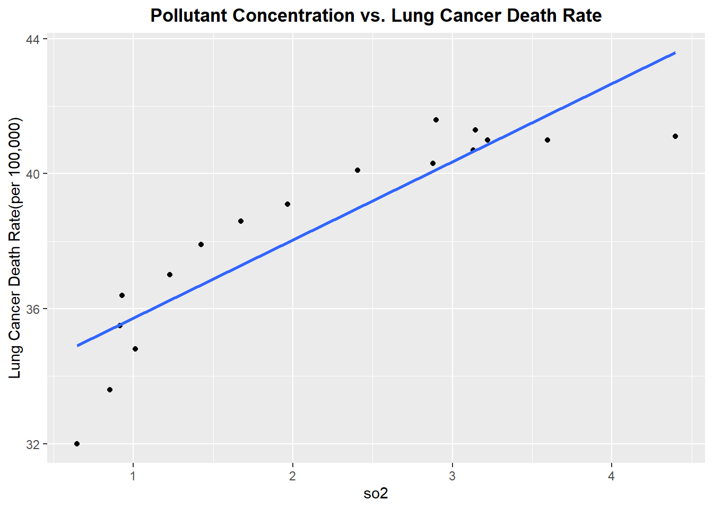
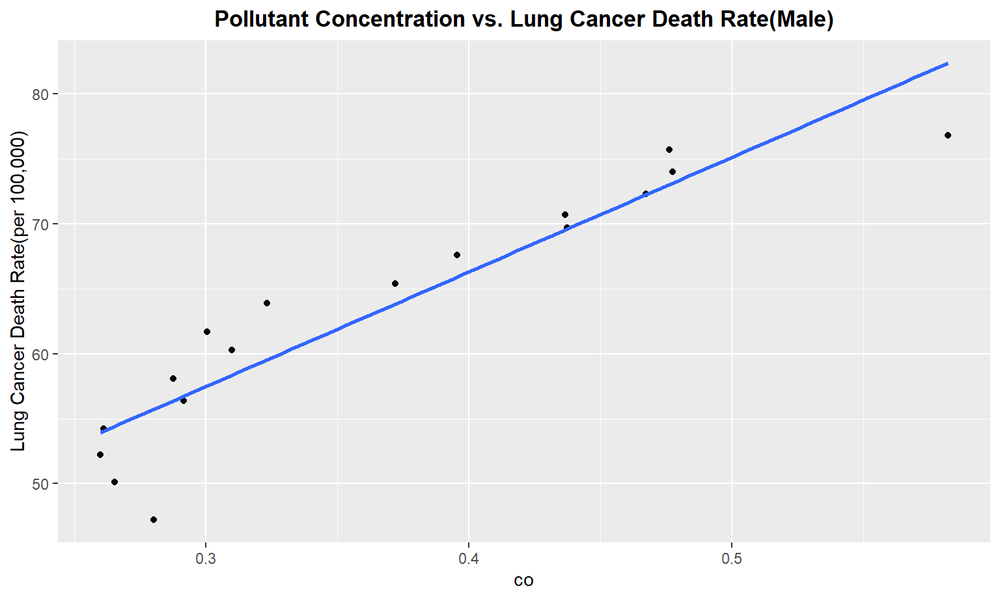

exploratory_analysis
Anand Rajan
12/5/2021
Exploring Pollution Data Set
modified_pollution =
read_csv("data/uspollution_us_2000_2016.csv") %>%
janitor::clean_names() %>%
select(state, date_local, no2_mean, o3_mean,
so2_mean, co_mean) %>%
rename(
no2=no2_mean,
co=co_mean,
o3=o3_mean,
so2=so2_mean
) %>%
separate(date_local, into = c("year", "month", "day"), sep = "\\-") %>%
select(-c("month", "day")) %>%
group_by(year, state) %>%
summarize(across(everything(), mean)) %>%
mutate_if(is.numeric, ~round(., 3)) %>%
filter(state != "Country Of Mexico") %>%
group_by(year) %>%
summarize(across(everything(), mean)) %>%
select(-c(state)) %>%
mutate(
year = as.numeric(year)
)## New names:
## * `` -> ...1## Rows: 1746661 Columns: 29## -- Column specification --------------------------------------------------------
## Delimiter: ","
## chr (8): Address, State, County, City, NO2 Units, O3 Units, SO2 Units, CO ...
## dbl (20): ...1, State Code, County Code, Site Num, NO2 Mean, NO2 1st Max Va...
## date (1): Date Local##
## i Use `spec()` to retrieve the full column specification for this data.
## i Specify the column types or set `show_col_types = FALSE` to quiet this message.## `summarise()` has grouped output by 'year'. You can override using the `.groups` argument.## `mutate_if()` ignored the following grouping variables:
## Column `year`## Warning in mean.default(state): argument is not numeric or logical: returning NA
## Warning in mean.default(state): argument is not numeric or logical: returning NA
## Warning in mean.default(state): argument is not numeric or logical: returning NA
## Warning in mean.default(state): argument is not numeric or logical: returning NA
## Warning in mean.default(state): argument is not numeric or logical: returning NA
## Warning in mean.default(state): argument is not numeric or logical: returning NA
## Warning in mean.default(state): argument is not numeric or logical: returning NA
## Warning in mean.default(state): argument is not numeric or logical: returning NA
## Warning in mean.default(state): argument is not numeric or logical: returning NA
## Warning in mean.default(state): argument is not numeric or logical: returning NA
## Warning in mean.default(state): argument is not numeric or logical: returning NA
## Warning in mean.default(state): argument is not numeric or logical: returning NA
## Warning in mean.default(state): argument is not numeric or logical: returning NA
## Warning in mean.default(state): argument is not numeric or logical: returning NA
## Warning in mean.default(state): argument is not numeric or logical: returning NA
## Warning in mean.default(state): argument is not numeric or logical: returning NA
## Warning in mean.default(state): argument is not numeric or logical: returning NAmodified_pollution %>%
knitr::kable(caption="United States Pollutant Concentration from 2000-2016")| year | no2 | o3 | so2 | co |
|---|---|---|---|---|
| 2000 | 17.323000 | 0.0250526 | 4.3962632 | 0.5822632 |
| 2001 | 17.670100 | 0.0256500 | 3.5975000 | 0.4763500 |
| 2002 | 15.537136 | 0.0277727 | 2.8994091 | 0.4774545 |
| 2003 | 14.554696 | 0.0266957 | 3.1442174 | 0.4672609 |
| 2004 | 14.944842 | 0.0243684 | 3.2192105 | 0.4366842 |
| 2005 | 15.296632 | 0.0264737 | 3.1294737 | 0.4373158 |
| 2006 | 13.284269 | 0.0259231 | 2.8768462 | 0.3955769 |
| 2007 | 12.208414 | 0.0260345 | 2.4068621 | 0.3721379 |
| 2008 | 10.843862 | 0.0263793 | 1.9670000 | 0.3232069 |
| 2009 | 9.916679 | 0.0255357 | 1.6744286 | 0.3003214 |
| 2010 | 10.668167 | 0.0272667 | 1.4239667 | 0.3099333 |
| 2011 | 10.971667 | 0.0268611 | 1.2288056 | 0.2875000 |
| 2012 | 10.445514 | 0.0280571 | 0.9306000 | 0.2916286 |
| 2013 | 10.187526 | 0.0259737 | 0.9171053 | 0.2610789 |
| 2014 | 9.591073 | 0.0258780 | 1.0114878 | 0.2597317 |
| 2015 | 9.253191 | 0.0259762 | 0.8508333 | 0.2652381 |
| 2016 | 10.988235 | 0.0262941 | 0.6460588 | 0.2801471 |
modified_pollution %>%
pivot_longer(
no2:co,
names_to = "pollutant_type",
values_to="concentration"
) %>%
ggplot(aes(x=year,y=concentration, group=pollutant_type, color=pollutant_type)) +
geom_point() +
geom_line() +
scale_color_viridis(discrete=TRUE) +
theme_bw() +
labs(
title="Trends in Polluntant Concentration in the US from 2000-2016",
x="Year",
y="Pollutant Concentration(ppm)"
)  Comparing Distributions of Pollutant Concentrations
Comparing Distributions of Pollutant Concentrations
modified_pollution %>%
pivot_longer(
no2:co,
names_to = "pollutant_type",
values_to="concentration"
) %>%
group_by(pollutant_type) %>%
ggplot(aes(x=pollutant_type, y=concentration)) +
geom_boxplot() +
labs(
title = "Distribution of Concentration Values for each Pollutant Type",
x="Pollutant Type",
y="Concentration(in ppm)"
) +
scale_color_viridis(discrete=TRUE) +
theme_bw() 
Exploring Trends in Death From Lung Cancer
read_death_time =
read_excel("data/DeathTrend.xlsx",
skip = 6) %>%
janitor::clean_names()
x = c("colorectum_female", "colorectum_male", "liver_and_intrahepatic_bile_duct_female", "liver_and_intrahepatic_bile_duct_male", "lung_and_bronchus_female", "lung_and_bronchus_male", "ovary_female", "uterus_cervix_and_corpus_combined_female")
remove_note = function(column_name) {
read_death_time = read_death_time %>%
separate(column_name, into = c(column_name, "note"), sep = "\\-") %>%
select(-note)}
for (i in x) {
read_death_time = remove_note(i)}
death_time =
read_death_time %>%
filter(year %in% 2000:2016) %>%
select(-c("breast_male", "ovary_male", "prostate_female","uterus_cervix_and_corpus_combined_male")) %>%
mutate_at(vars(-("year")), as.numeric) %>%
mutate(
year = as.numeric(year)
)death_time %>%
rename(
male = lung_and_bronchus_male,
female = lung_and_bronchus_female
) %>%
pivot_longer(
female:male,
names_to = "gender",
values_to = "death_rate"
) %>%
ggplot(aes(x=year,y=death_rate, group=gender, color=gender)) +
geom_point() +
geom_line() +
labs(
title= "Trend in US Death rate from Lung Cancer, 2000-2016",
x= "Year",
y="Lung Cancer Death Rate(per 100,000)"
)
Exploring relationship between trend in death rate from Lung Cancer to Pollution Concentration
merged_death_pollution=
merge(death_time, modified_pollution, by = "year") pollutant_variables =
merged_death_pollution %>%
select(no2,o3,so2,co) %>%
colnames() %>%
as.vector()Create a for loop to plot Pollutant concentration vs. Lung Cancer Death Rate
pollutant_variables =
pollutant_variables %>%
as.list()
for (i in pollutant_variables){
plot =
ggplot(merged_death_pollution, aes_string(i, "lung_and_bronchus_male")) +
geom_point() +
geom_smooth(method = lm, se = FALSE) +
labs(title = "Pollutant Concentration vs. Lung Cancer Death Rate", y = "Lung Cancer Death Rate(per 100,000)") +
theme(plot.title = element_text(hjust = 0.5, face = "bold"))
print(plot)
}## `geom_smooth()` using formula 'y ~ x'
## `geom_smooth()` using formula 'y ~ x'
## `geom_smooth()` using formula 'y ~ x'
## `geom_smooth()` using formula 'y ~ x'
for (i in pollutant_variables){
plot =
ggplot(merged_death_pollution, aes_string(i, "lung_and_bronchus_female")) +
geom_point() +
geom_smooth(method = lm, se = FALSE) +
labs(title = "Pollutant Concentration vs. Lung Cancer Death Rate", y = "Lung Cancer Death Rate(per 100,000)") +
theme(plot.title = element_text(hjust = 0.5, face = "bold"))
print(plot)
}## `geom_smooth()` using formula 'y ~ x'
## `geom_smooth()` using formula 'y ~ x'
## `geom_smooth()` using formula 'y ~ x'
## `geom_smooth()` using formula 'y ~ x'
Exploring Incidence of Lung Cancer
g = list(
scope = 'usa',
projection = list(type = 'albers usa'),
showlakes = TRUE,
lakecolor = toRGB('white')
)
inc_state =
read_excel("data/IncRate.xlsx", sheet = "State",
skip = 6) %>%
janitor::clean_names() %>%
separate(
col = breast_both_sexes_combined,
into = c("breast_total", "female_breast_only"),
sep = "-"
) %>%
mutate(
breast_male = if_else(breast_male == "n/a", "0", breast_male),
cervix_male = if_else(cervix_male == "n/a", "0", cervix_male),
colon_excluding_rectum_both_sexes_combined = if_else(colon_excluding_rectum_both_sexes_combined == "n/a", "0", colon_excluding_rectum_both_sexes_combined),
colon_excluding_rectum_female = if_else(colon_excluding_rectum_female == "n/a", "0", colon_excluding_rectum_female),
colon_excluding_rectum_male = if_else(colon_excluding_rectum_male == "n/a", "0", colon_excluding_rectum_male),
) %>%
filter(state != "Puerto Rico")## Warning: Expected 2 pieces. Missing pieces filled with `NA` in 2 rows [18, 25].inc_state %>%
select(state, lung_and_bronchus_both_sexes_combined) %>%
mutate(code = state.abb[match(state, state.name)],
lung_and_bronchus_both_sexes_combined = as.numeric(lung_and_bronchus_both_sexes_combined)) %>%
filter(code != is.na(code)) %>%
relocate(state, code) %>%
plot_geo(., locationmode = 'USA-states') %>%
add_trace(
z = ~lung_and_bronchus_both_sexes_combined, text = ~state, locations = ~code,
color = ~lung_and_bronchus_both_sexes_combined, colors = 'viridis'
) %>%
colorbar(title = "Incidence Rate") %>%
layout(
title = "Distribution of Lung and Bronchus Cancer Incidence Rate by State in 2013-2017",
geo = g
)## Warning in mask$eval_all_mutate(quo): NAs introduced by coercion## Warning: Ignoring 1 observations